Brain and body
A 55,000-point nervous system stylised after Drosophila anatomy, a fly-eye view through 750 ommatidia, tarsal adhesion, gaze contrast and viewing distance, all live.
Fruit Fly Lingo puts a simulated fruit fly in front of the screens we use to learn: a phone that teaches word parts, a laptop that asks it to spell, a gradebook, a proctoring grid, a classroom of 24 flies with tablets in mating season, a phonics app that asks it to say the word, which it sings back with one wing, a tablet of illustrated stories it reads aloud while hovering, a writing app where it answers in cursive with the tip of its abdomen, a VR headset that seats it at a desk in a third grade class taught by another fly, a glass AR headset that fills the table with holographic word blocks, a Scrabble board where it plays a butterfly, a hardback picture book whose pages it turns with its own wings, and a globe on a school desk for geography trivia. A stylised fly brain lights up with what it does, a dopamine reward strengthens its memory of each prefix, root and suffix, and psychometric dashboards measure the learning as it happens. It is the interaction layer of the Embodied Drosophila Literacy Simulation, a study of whether a nervous system evolved for finding food can be repurposed for symbolic learning.
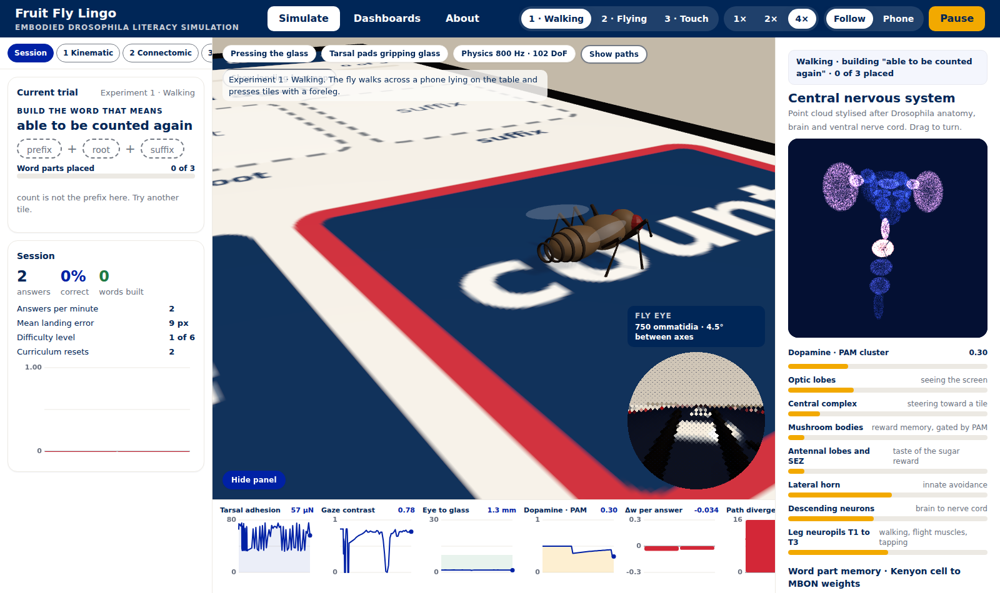
Thirteen student activities and two staff roles. Pick one to open it in the simulator; the same fly, brain and curriculum run through all fifteen.
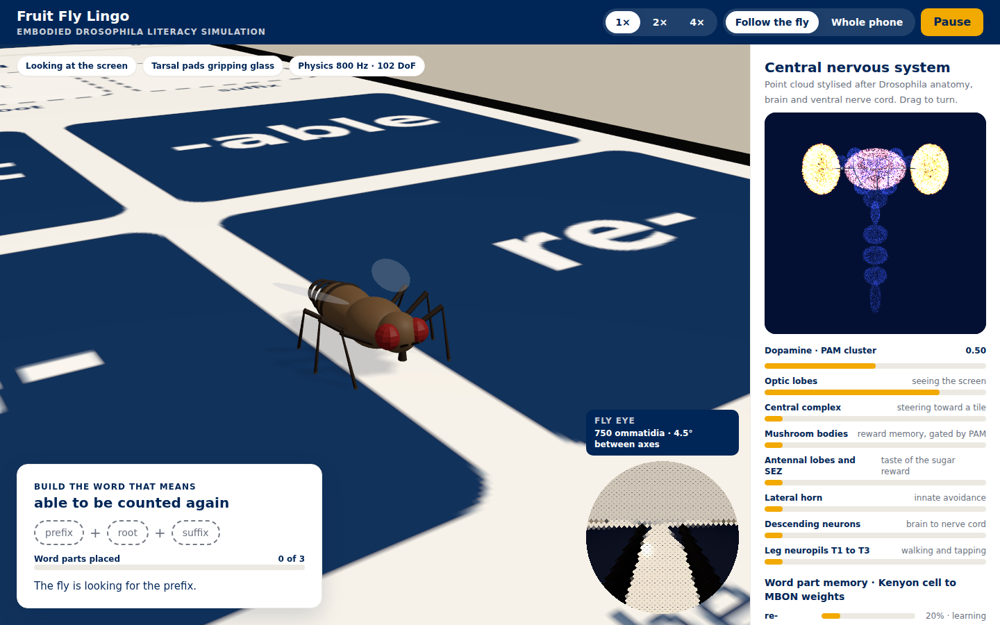
The fly walks across a phone lying on the table, reads the meaning with head sweeps, and presses word-part tiles with a foreleg.
Student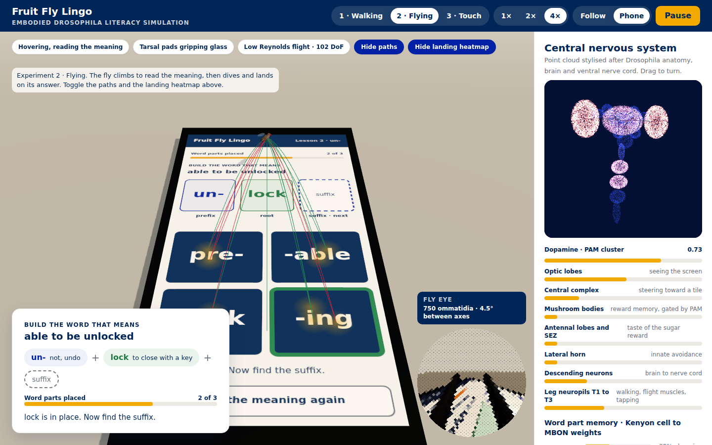
It climbs to read the meaning, then dives and lands on its answer. Flight paths and a landing heatmap build up over trials.
Student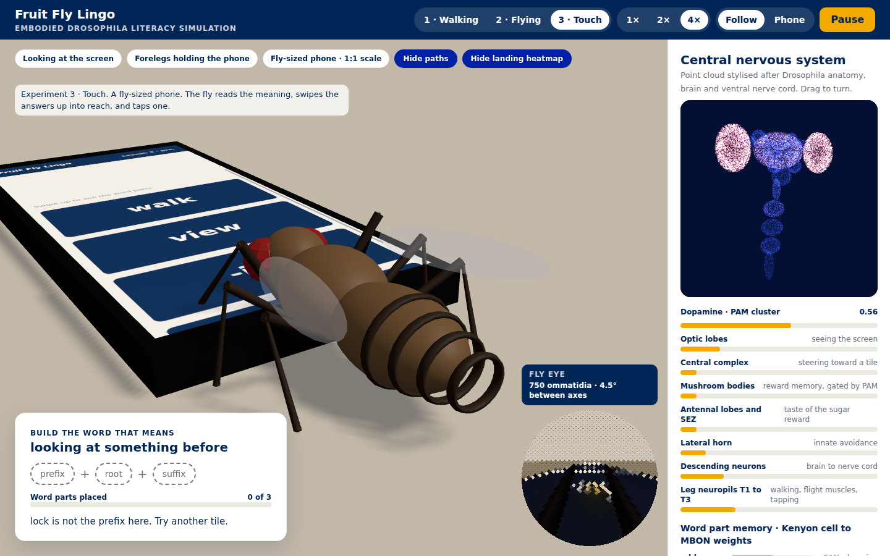
A phone at the fly's own scale, held at the bottom edge. It swipes the answers into reach and taps one.
Student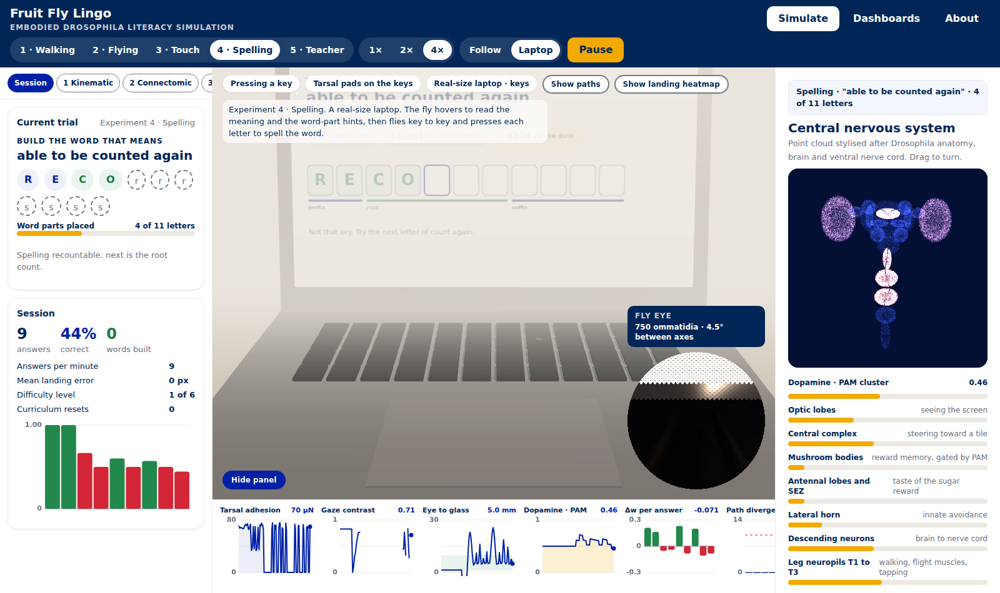
A real-size laptop shows the meaning and the word-part hints. The fly flies key to key and presses each letter to spell the word.
Student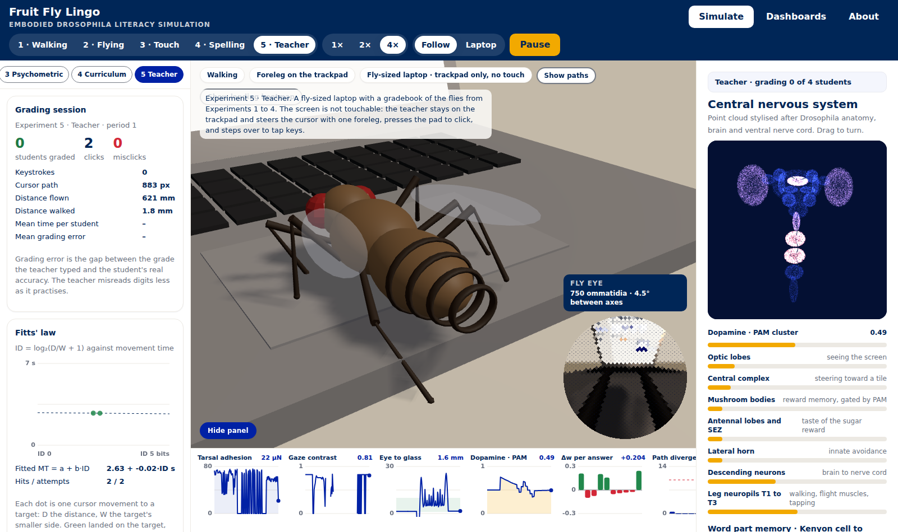
A teacher fly grades the four students from a fly-sized laptop, steering the cursor with one foreleg on the trackpad. The screen is never touched.
Staff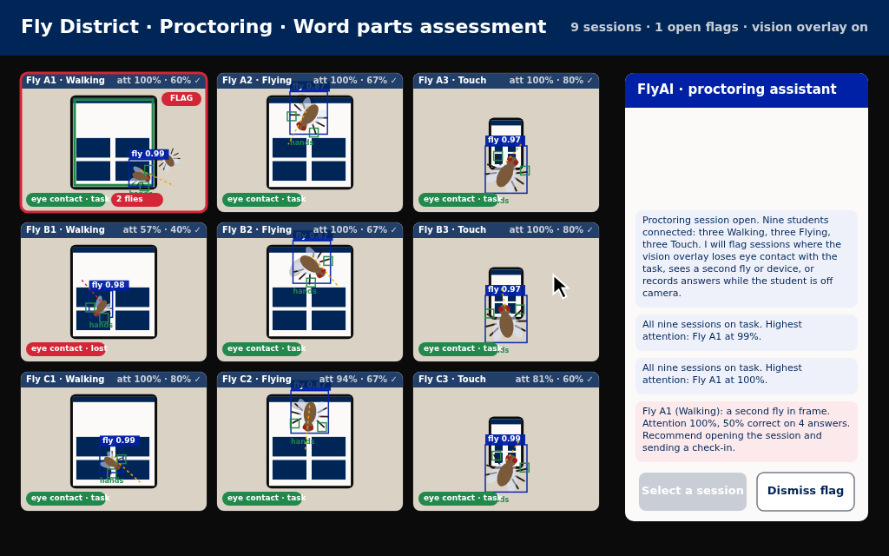
Nine webcam sessions on one screen, a vision overlay on every fly, and FlyAI flagging suspected cheating for the admin to check in on.
Staff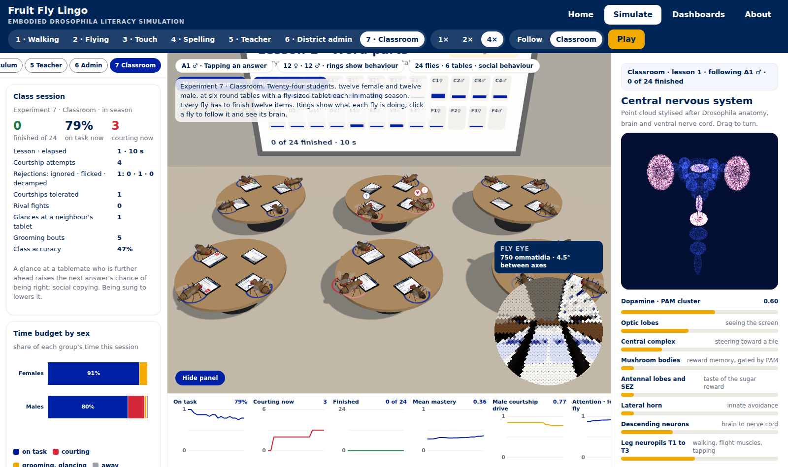
Twenty-four students at six round tables, one tablet each, in mating season. Courtship, rejection and rivalry compete with the lesson, and everyone still has to finish.
Student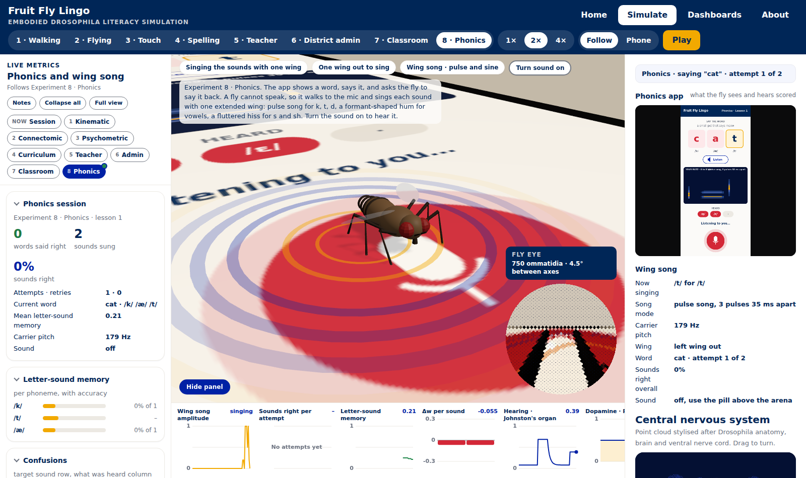
The app says a word and the fly says it back, sound by sound, by singing with one wing: pulse song for consonants, a hum for vowels. The recogniser scores every sound.
Student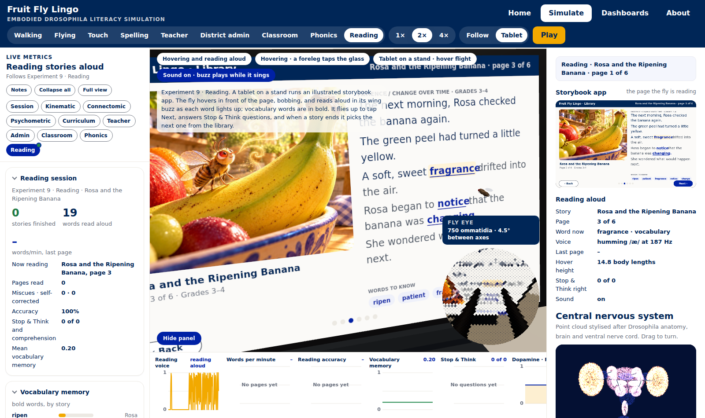
A tablet on a stand runs illustrated six-page stories. The fly hovers and reads aloud in its buzz, taps Next, answers Stop & Think questions, and picks its next story.
Student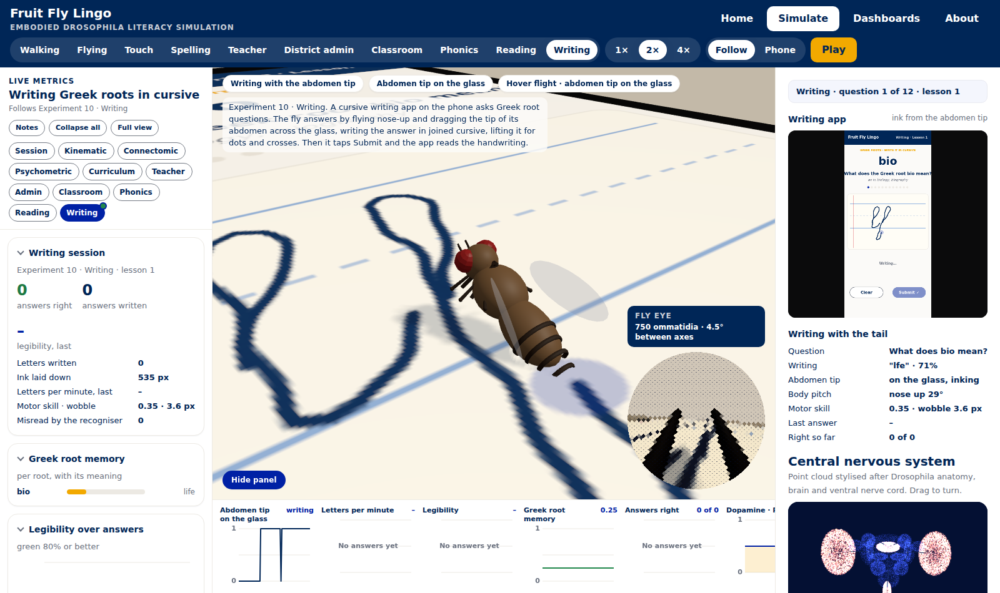
Greek root questions answered in joined cursive. The fly flies nose-up and drags the tip of its abdomen across the glass, then taps Submit to have its handwriting read.
Student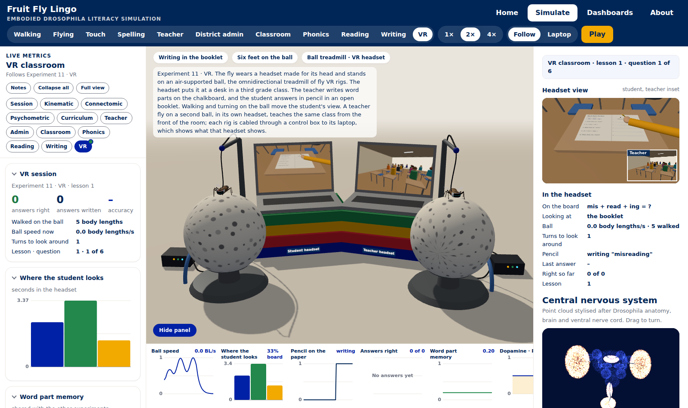
A fly-sized visor, cabled to a ball treadmill and a laptop. Inside, the student sits at a desk in a third grade class and answers in pencil, while a teacher fly on a second rig chalks word parts on the board.
Student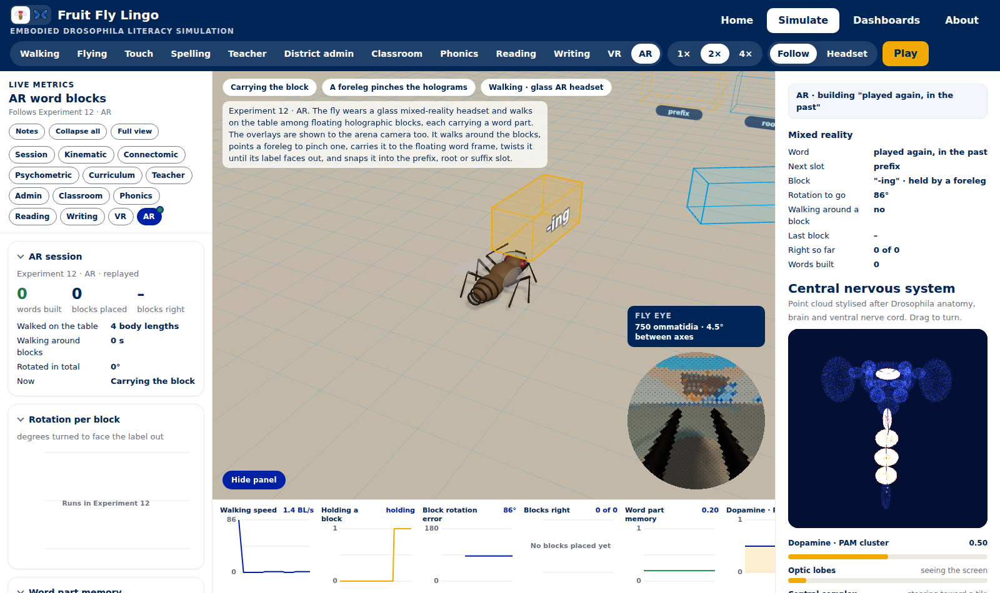
A glass headset puts holographic word blocks in the room. The fly walks around them, pinches one with a foreleg, carries it to the word frame, rotates it and snaps it in.
Student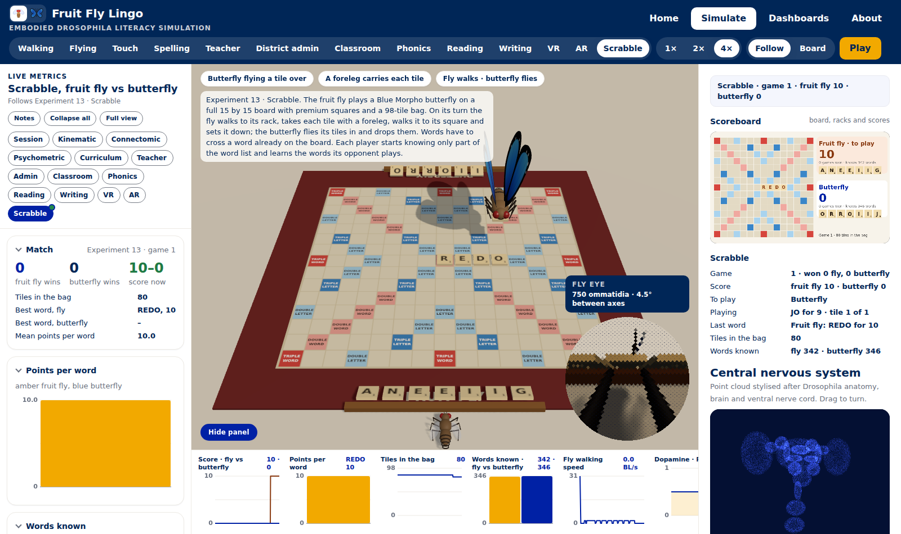
Fruit fly against butterfly on a full board. The fly walks each tile from its rack to its square; the butterfly flies its tiles in. Each learns the words the other plays.
Student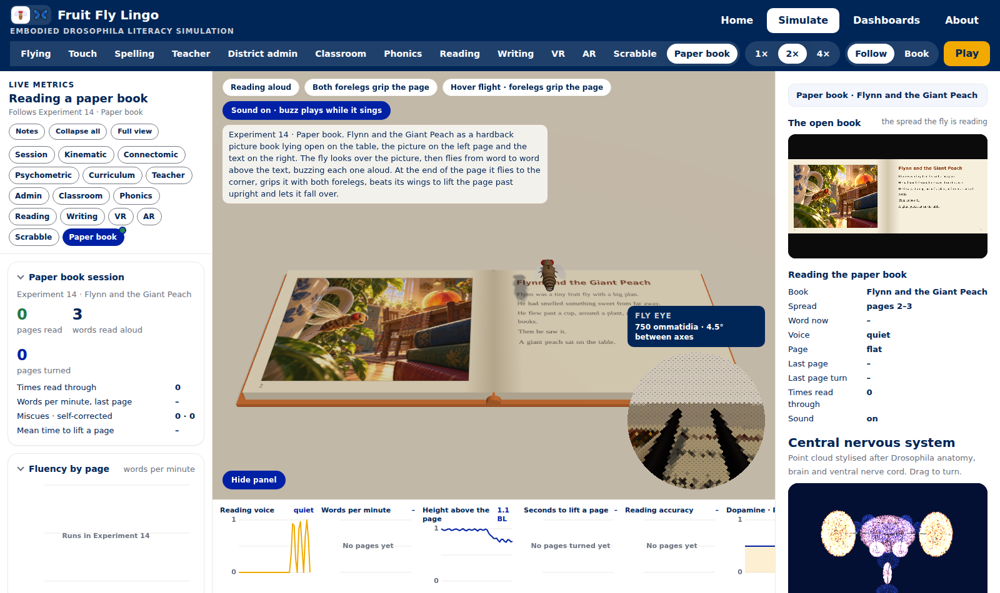
Flynn and the Giant Peach as a hardback picture book. The fly reads it aloud word by word, then grips the page corner and lifts the page over with its wings.
Student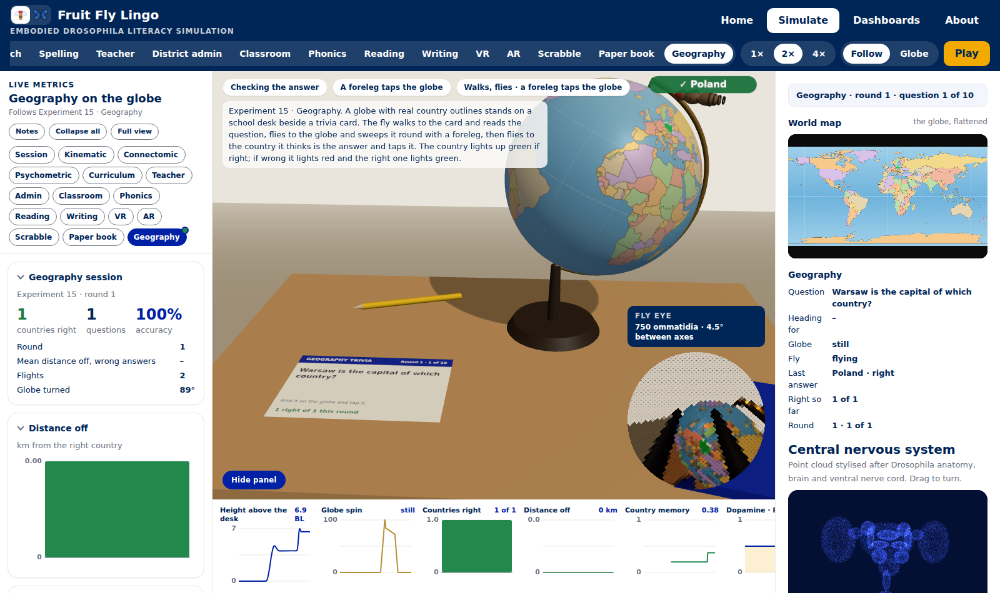
Trivia on a globe with real country outlines. The fly reads the card, flies to the globe, spins it round and taps the country; it lights green if right, red if wrong.
StudentA 55,000-point nervous system stylised after Drosophila anatomy, a fly-eye view through 750 ommatidia, tarsal adhesion, gaze contrast and viewing distance, all live.
The dopamine rule Δw = η(R − V) on every answer, G-DINA attribute mastery, Half-Life Regression forgetting curves, and a Rasch Wright map with standard errors.
Fitts' law for the teacher's cursor, grading error against real accuracy, and proctoring flags scored against seeded cheating with precision and response time.
Experiment 1 · Walking. The fly walks across a phone lying on the table and presses tiles with a foreleg.
Four dashboards from the psychometric specification, fed by the running fly. Values update while the simulation runs in the Simulate view. Where a quantity is a stand-in for a sensor or model the app does not yet have, the card says so.
The fly is looking for the prefix.
Stand-in: about 12 µN per tarsal pad in contact, the order of measured Drosophila pad forces. The MuJoCo adhesion actuators will replace it.
Sampled from the real screen texture at the point the head camera looks at.
Stand-in for the 59-dimensional action vector until the physics body exists.
Head sweeps during look and hover phases trace the path. Sequential contrast changes along it are what resolve letters at a 4.5° inter-ommatidial angle.
Each bar is one answer. Green raised the Kenyon cell to MBON weight of the needed word part; red lowered it.
Region-level stand-in: fibre tracts of the stylised brain, scaled by live co-activity. Rows for the ventral nerve cord are absent from FAFB, which stops at the brain.
| Task | α1 Contrast edge detection | α2 Shape discrimination | α3 Sequential symbol tracking | α4 Precision motor targeting |
|---|---|---|---|---|
| Symbol identification | Yes | Yes | No | Yes |
| Phonetic sequence | Yes | Yes | Yes | Yes |
| High-contrast touch | Yes | No | No | Yes |
Proxies from the running session: α1 from contrast under the gaze while reading, α2 from accuracy when distractors share the needed kind, α3 from root and suffix placements, α4 from landing error.
One simulated minute counts as one day. Half-life grows with the weight: h = 0.5 · 2^(4m) days.
θ from the logit of overall accuracy with its standard error; β per task from the logit of that task's failure rate. S-X² is approximated from observed against expected success per difficulty level and flagged at 1.5 or above.
C_t = f_t C_{t−1} + i_t v_t k_tᵀ with the stabiliser m_t and normaliser n_t, run on keys from the fly's sensory stream and values from the task state. A toy cell, not the trained model; TFLA kernels apply once inference moves to WebGPU.
Divergence is the mean distance between the fly's actual path and the ghosted optimal path to the correct tile (shown dashed in the arena with paths on). Above 10 the curriculum resets a level.
Experiment 5. A teacher fly grades the flies from Experiments 1 to 4 in a gradebook on a fly-sized laptop, using only the trackpad and keys. Their rows are this session's real trials, so the other experiments are what the teacher is reading.
Grading error is the gap between the grade the teacher typed and the student's real accuracy. The teacher misreads digits less as it practises.
Each dot is one cursor movement to a target: D the distance, W the target's smaller side. Green landed on the target, red missed.
Drawn over a miniature of the gradebook. Rows and buttons the fly aims for should light up; scatter elsewhere is misclicks.
| Student | Answers | Correct | Words | Grade given | Error |
|---|
Experiment 6. A district admin fly watches nine students on a 3 × 3 grid of webcam sessions, with a computer-vision overlay and FlyAI recommendations. Three of the nine are seeded with a cheating behaviour; the dashboard scores the flags against that hidden truth.
A flag is confirmed when the student it names was seeded to cheat. Response time runs from the FlyAI flag to the admin's check-in click.
From the vision overlay: share of recent frames where the gaze line meets the student's own screen. Red names are seeded cheaters; the admin does not see this column.
Experiment 7. Twenty-four flies share six round tables in mating season. Everyone does the same twelve word-part items; what differs is how much of each fly's time the room takes. Courtship, rejection and rivalry follow the Drosophila literature, and a rejected male courts less afterwards, so the class settles as a lesson goes on.
A glance at a tablemate who is further ahead raises the next answer's chance of being right: social copying. Being sung to lowers it.
Males lose time courting. Females lose it to being courted: rejecting, decamping, and the attention cost of a male singing beside them.
Each rejection cuts a male's courtship drive by about a third, the courtship-conditioning effect; it recovers a little between lessons.
Who courted whom. Tablemates dominate, because reaching another table takes a flight.
Turn mating season off in the simulator to compare. A lesson ends only when its last fly finishes.
| Fly | Doing | Items | Accuracy | On task | Courted · courting | Rejections given · received | Drive · receptivity | Attention |
|---|
Experiment 8. The app says a word and the fly sings it back sound by sound with one wing. The recogniser scores each sound against the word; a letter-sound memory per phoneme learns with the same Δw = η(R − V) rule as the word parts.
A word gets two attempts. The chance of singing a sound right is 0.3 + 0.65 × its memory, so sounds the fly has practised come out right more often.
Grouped by how the fly sings them: pulse song for stops, a hum for vowels and nasals, a hiss for fricatives.
The diagonal is right answers. Off-diagonal cells cluster within a kind of sound, the errors a phonics teacher expects: /k/ for /t/, /s/ for /ʃ/.
| Sounds | Song mode | In real flies |
|---|---|---|
| Stops · /b d g k p t/ | Pulse song, three pulses 35 ms apart, filtered at the consonant's burst frequency | Pulse song, interpulse interval about 35 ms |
| Vowels · /æ ɛ ɪ ɒ ʌ/ | A sawtooth hum at 165 to 205 Hz shaped by the vowel's first two formants | Sine song, a hum near 150 Hz |
| Fricatives · /f s ʃ tʃ h/ | Band-passed hiss fluttered at the wingbeat | Not in the song; the wing's noise |
| Nasals and liquids · /m n l r/ | A low muffled hum, or a gliding one | Sine song variants |
Experiment 9. The fly reads six-page illustrated stories from a tablet on a stand, aloud in its wing buzz, taps Next to turn pages, answers a Stop & Think question after page 3 and a comprehension question after page 6, then chooses the next story from the library.
A miscue is a word read wrong; most are self-corrected. Unfamiliar vocabulary words are read more slowly and misread more often until their memory grows.
Each time the fly reads a bold word correctly its memory grows by Δw = η(R − V); a misread lowers it.
Timed in simulation seconds, so the rate does not change with the speed buttons.
| Story | Theme | Grade | Words to know | Read |
|---|
Illustrations are AI-generated from each page's image prompt; a page without an image is painted in the browser instead.
Experiment 10. The fly answers Greek root questions by writing in cursive with the tip of its abdomen while it flies, then taps Submit and the app reads the handwriting. Right answers depend on a memory per root; legibility depends on a motor skill that grows with practice.
Legibility falls as the wobble of the abdomen tip grows. Below about 55% the recogniser can read one letter as another, so a right answer can be marked wrong.
The chance of writing the right answer is 0.3 + 0.65 × the root's memory, which learns with Δw = η(R − V).
The fly's tail control improves a little with every answer.
| Root | Meaning | As in | Tries | Right |
|---|
Experiment 11. The fly walks on an air-supported ball in a headset that seats it at a desk in a third grade class. It watches the teacher, a second fly on its own rig, write word parts on the chalkboard and answers in pencil in its booklet. Walking and turning on the ball move its view; answers train the same word part memory as the other experiments.
The ball floats on air, so every step turns it instead of moving the fly. Forward walking bobs the student's view; a turn swings it toward a classmate.
Board while the teacher writes, booklet while the pencil moves, classmates when the fly turns on the ball.
The chance of writing the right answer is 0.35 + 0.6 × the memory of the parts on the board, which learns with Δw = η(R − V).
| On the board | Answer | Written | Right |
|---|
Experiment 12. The fly walks on the table in a glass mixed-reality headset. Holographic blocks, each carrying a word part, float around it; it walks around them, pinches one with a foreleg, carries it to the word frame, rotates it until its label faces out and snaps it into a slot. Placements train the same word part memory as the other experiments.
The holograms float at head height, so the blocks it is not fetching are obstacles: it steers around them on the way to a block and on the way to the frame.
Green placed right, red sent back. Blocks start at a random angle, so each needs a twist of the foreleg.
The chance of fetching the right block is 0.35 + 0.6 × the memory of the part the slot needs, which learns with Δw = η(R − V).
| Word | Slot | Block | Rotated | Walked | Right |
|---|
Experiment 13. The fruit fly and a Blue Morpho play Scrabble on a full board. The fly walks each tile from its rack to its square; the butterfly flies its tiles in. Each player knows only part of the word list at first and learns the words the other plays.
Words must cross one already on the board, with no side words. Letter values and premium squares follow the standard game; using all seven tiles scores 50 more.
Each player plays its best-scoring word most of the time, and one of its top five otherwise.
Both start knowing the two- and three-letter words and about half of the rest. A word the opponent plays is learned seven times in ten.
| Game | Player | Word | Where | Tiles | Points |
|---|
Experiment 14. The fly reads Flynn and the Giant Peach as a hardback picture book. It flies from word to word above the page, buzzing each one aloud, and turns every page itself: it grips the corner with both forelegs and lifts the page with its wings until it falls over.
A page is heavy for a fly: it comes up slowly while the wings beat, the corner leading, and once past upright it falls over on its own.
Bold vocabulary words are read more slowly until their memory grows.
The lift speed wavers with each wingbeat.
Experiment 15. Trivia questions answered on a globe with real country outlines. The fly reads the card, flies to the globe, spins it, and taps the country it thinks is right. A memory per country decides how often it is right; a wrong tap is usually a neighbour, and the distance off is measured along the Earth's surface.
The globe leans 23.4° on its axis. Before each answer the fly sweeps it round with a foreleg until the region it wants faces it.
Green bars are right answers. A wrong answer is one of the four countries nearest the right one.
The chance of tapping the right country is 0.3 + 0.65 × its memory, which learns with Δw = η(R − V).
| Question | Answer | Tapped | Off by |
|---|
Fruit Fly Lingo is the interaction layer of the Embodied Drosophila Literacy Simulation (EDLS). It puts a simulated fruit fly in front of a smartphone that teaches word parts, and asks a simple question with a hard answer: can a nervous system that evolved for finding food and avoiding swatters be repurposed to assemble prefixes, roots and suffixes?
A procedural fly with six IK legs, wings and a head-mounted compound-eye camera lives on a table with a phone. The phone runs a small morphology curriculum in the style of LibreLingo and Word Root Workshop: build the word that means able to be counted again from re-, count and -able. The fly answers by touching tiles, and the student experiments vary how it gets there: walking on the glass, flying up to read and diving to land, holding a fly-sized phone and swiping, or spelling the word key by key on a laptop. Two more experiments put flies on the other side of the desk: a teacher grading those students from a fly-sized laptop, and a district admin proctoring nine of them through webcam sessions with a vision overlay and an assistant called FlyAI. A seventh puts twenty-four student flies in one classroom during mating season, where courtship, rejection and rivalry compete with the lesson. An eighth is a phonics lesson: the fly cannot speak, so it answers by singing each sound with one wing. A ninth hands it a library of illustrated stories on a tablet, which it reads aloud in its buzz, flying from word to word. A tenth asks it to write: it answers Greek root questions in cursive with the tip of its abdomen.
A stylised central nervous system, about 55,000 points laid out after Drosophila anatomy, lights up with what the fly does: optic lobes while it reads, central complex and leg neuropils while it moves, mushroom bodies and taste centres when a sugar reward arrives, lateral horn when it flinches from a wrong answer.
Whether biological wiring is a useful inductive bias for symbolic learning. A random network can learn to tap tiles; the interesting result is a network constrained by the fly's actual circuits doing it, because then the solution has to route through the same sensorimotor pathways a real fly uses. The "Digital Sphinx" problem, a worm connectome driving a fly body, shows how easily a high-capacity learner fakes the behaviour without the biology.
How reward learning in the mushroom body maps onto a curriculum. The PAM dopamine cluster gates plasticity between Kenyon cells and output neurons; here that is the rule Δw = η(R − V) that strengthens a word part's memory after a correct answer, and the Half-Life Regression that schedules its review.
How to measure learning in a non-human agent. The dashboards apply G-DINA cognitive diagnosis, Half-Life Regression and the Many-Facet Rasch model so that "the fly learned re-" is a claim with a posterior, a half-life and a logit, not a feeling.
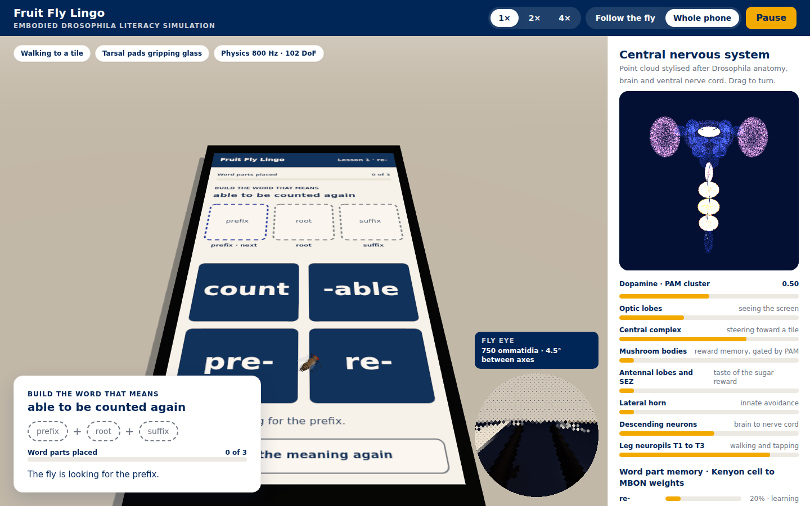
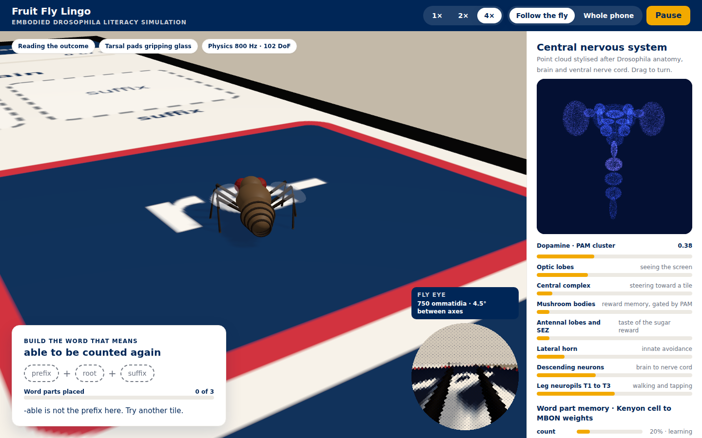
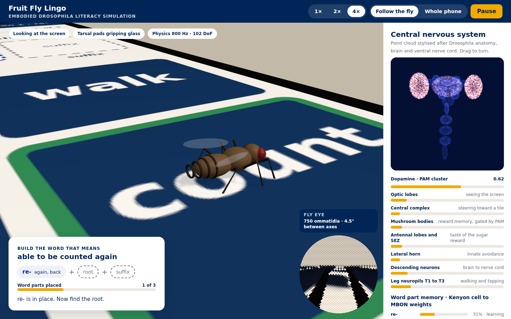
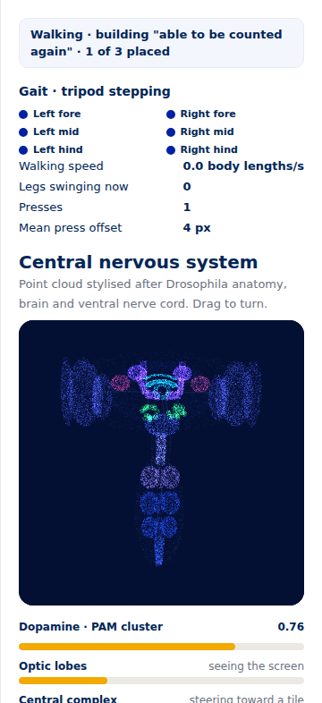
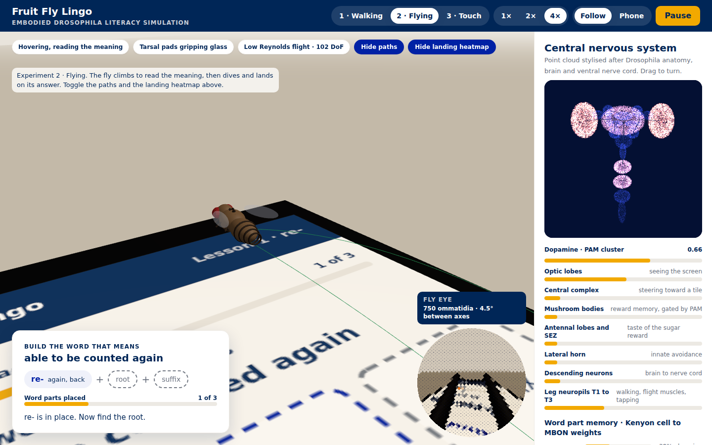
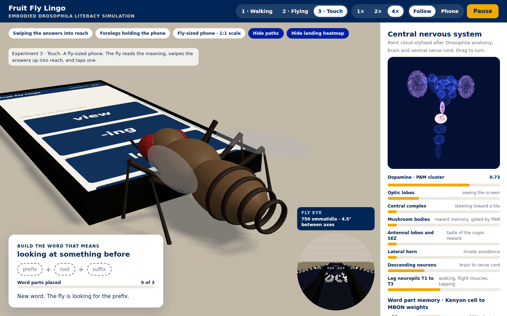
| Experiment | Phone | Reading | Answering | Records |
|---|---|---|---|---|
| 1 · Walking | Table-sized, lying flat | Head sweep from where it stands | Walks to the tile, presses with a foreleg | Walking paths, press heatmap |
| 2 · Flying | Table-sized, lying flat | Climbs to a hover point over the prompt | Dives and lands on the tile; landing is the answer | Flight paths, landing heatmap |
| 3 · Touch | Fly-sized, held at the bottom edge | Reads at scroll 0 | Swipes the list, then taps | Press heatmap in content coordinates |
Everything is computed from the live session; where a quantity stands in for a sensor or model the app does not yet have, its card says so. The same cards dock beside the arena in the Simulate view, which opens the dashboard for whichever experiment is running.
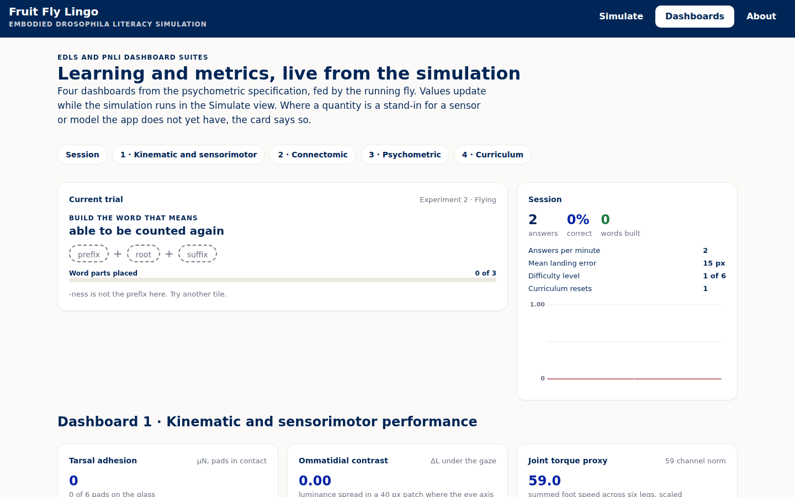
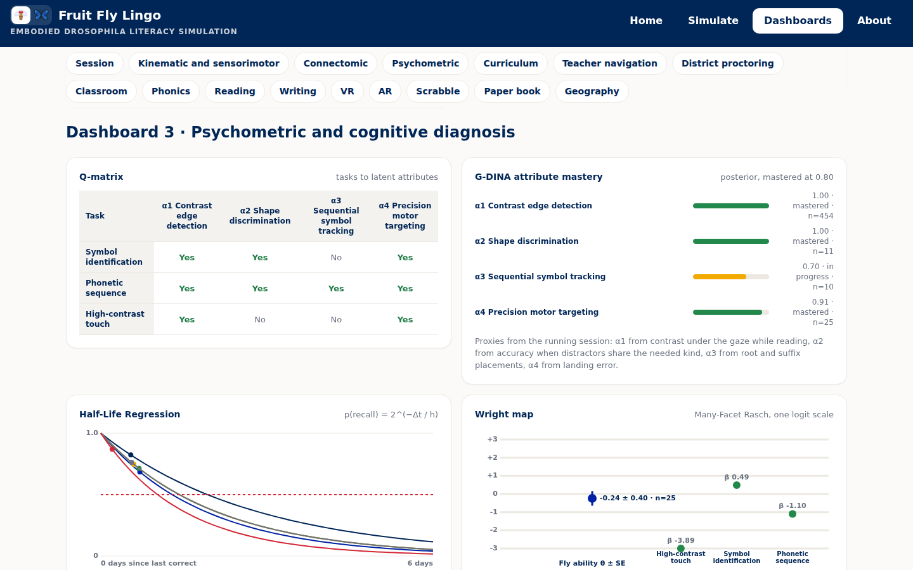
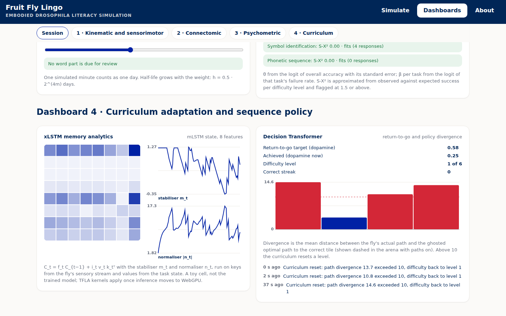
The whole application lives in one HTML file. The diagrams group it by responsibility; arrows are data or control flow at run time. They are the same diagrams as in the repository README.
flowchart TB
subgraph Browser["Browser · index.html"]
direction TB
subgraph UI["HUD · HTML + CSS (UF design tokens)"]
Header["Header controls<br/>experiment · speed · camera · pause"]
TrialCard["Trial card<br/>meaning · placed chips · progress · feedback"]
StatePills["State pills<br/>phase · adhesion · physics"]
BrainHUD["Brain panel HUD<br/>dopamine · region bars · memory · stats"]
EyeLabel["Fly-eye label"]
end
subgraph Game["Curriculum and game state"]
WORDS["WORDS[]<br/>word · meaning · parts · glosses"]
Distractors["DISTRACTORS[]"]
GameState["game<br/>wordIdx · placed · tiles · flash<br/>memory Map · dopamine · taps · correct"]
buildTiles["buildTiles()<br/>remaining parts + distractors, shuffled"]
registerTap["registerTap(i)<br/>correct → memory↑ dopamine↑ placed++<br/>wrong → memory↓ dopamine↓ flinch"]
nextWord["nextWord()"]
end
subgraph Screen["Phone screen"]
ScreenCanvas["2D canvas 390×844<br/>drawScreen(): grid layout, or scrolling list for Touch"]
ScreenTex["THREE.CanvasTexture<br/>map + emissiveMap on the screen plane"]
pxToWorld["pxToWorld(px, py)<br/>content px → phone local → world, through phone scale"]
end
subgraph Agent["Agent · state machine (stepAgent), one path per experiment"]
Look["look<br/>head sweep · optic lobes"]
Walk["1 walk<br/>steer to stand point · gait · CX, DN, T1–T3"]
Takeoff["2 takeoff → hover<br/>climb over the prompt, read"]
Dive["2 dive → land<br/>bezier to the tile, landing = answer"]
Scroll["3 scroll<br/>foreleg swipes move scrollY"]
Tap["tap<br/>foreleg reach · press · return"]
React["react"]
Celebrate["celebrate<br/>word complete"]
chooseTile["chooseTile()<br/>P(correct) = 0.35 + 0.6 · memory"]
pickTarget["pickTarget()<br/>tile centre + normal scatter"]
Look --> Walk --> Tap
Look --> Takeoff --> Dive --> React
Look --> Scroll --> Tap
Tap --> React --> Look
Tap --> Celebrate --> Look
Dive --> Celebrate
end
subgraph Records["Trajectories and heatmap"]
Traj["trajGroups[exp]<br/>THREE.Line per trial, green or red"]
Heat["heat[exp] canvas<br/>radial blobs at landing px, drawn into the screen"]
Toggles["Show paths · Show landing heatmap"]
end
subgraph Fly["Procedural fly (animateFly)"]
Body["body group<br/>thorax · abdomen · head · eyes · antennae"]
Wings["wings<br/>buzz on reward"]
Proboscis["proboscis<br/>extends on reward"]
Legs["6 legs · femur + tibia<br/>world-space feet · tripod stepping"]
IK["solveLeg()<br/>two-bone analytic IK"]
FlyState["flyState<br/>pos · yaw · headYaw · buzz · flinch · gaitPhase"]
end
subgraph Brain["Brain activity model"]
Regions["REGIONS[16]<br/>optic L/R · central · MB L/R · CX · AL L/R<br/>LH L/R · SEZ · DN · T1 · T2 · T3 · ABD"]
Act["act[16] Float32Array<br/>pulse(i, v) · exponential decay"]
PointCloud["Points ~55k<br/>ShaderMaterial: region → act[] → colour, size"]
Fibres["FIBRES[14] CatmullRom tracts<br/>pulse particles gated by source activity"]
Groups["GROUPS[7]<br/>anatomical labels for the HUD"]
end
subgraph Render["Rendering · three.js r160"]
MainScene["Main scene<br/>table · phone · glass · fly · lights · shadows"]
MainCam["Perspective camera + OrbitControls<br/>follow / phone modes"]
EyeCam["Eye camera on the head<br/>fov 140"]
EyeRT["WebGLRenderTarget 256²"]
EyeShader["Ommatidia shader quad<br/>hex nearest-centre sampling"]
BrainScene["Brain scene · second renderer<br/>OrbitControls autoRotate"]
Loop["frame()<br/>dt = raw · speed, substepped at 25 ms"]
end
end
CDN["cdn.jsdelivr.net<br/>three.module.js · OrbitControls.js"] -.import map.-> Render
Header -->|speed, camera, play| Loop
Header -->|set camera mode| MainCam
BrainHUD -->|reset| GameState
WORDS --> buildTiles --> GameState
Distractors --> buildTiles
GameState --> ScreenCanvas --> ScreenTex --> MainScene
GameState --> TrialCard
GameState --> BrainHUD
Loop --> Agent
Loop --> Fly
Loop -->|decay| Act
Loop --> MainCam
chooseTile --> pickTarget
GameState --> chooseTile
pickTarget --> pxToWorld
pxToWorld --> FlyState
Walk -->|record positions| Traj
Dive -->|record positions| Traj
registerTap -->|landing px| Heat
Heat --> ScreenCanvas
Toggles --> Traj
Toggles --> Heat
Traj --> MainScene
Agent -->|pulse| Act
Agent -->|phase| StatePills
Tap -->|foot reaches tile| Legs
Tap --> registerTap --> GameState
registerTap -->|pulse| Act
registerTap -->|buzz, proboscis, flinch| FlyState
Celebrate --> nextWord --> GameState
FlyState --> Body
FlyState --> Wings
FlyState --> Proboscis
Legs --> IK --> MainScene
Body --> EyeCam
Regions --> PointCloud
Regions --> Fibres
Act --> PointCloud
Act --> Fibres
Act --> Groups --> BrainHUD
PointCloud --> BrainScene
Fibres --> BrainScene
MainScene --> MainCam --> Loop
MainScene --> EyeCam --> EyeRT --> EyeShader -->|scissor viewport| Loop
BrainScene --> Loop
stateDiagram-v2
[*] --> look
look: look - head sweeps, optic lobes active, Touch scrolls back to the top
state "Experiment 1 - Walking" as E1 {
walk: walk - turn toward the tile and move to a stand point short of it
}
state "Experiment 2 - Flying" as E2 {
takeoff: takeoff - eased climb to the hover point over the prompt
hover: hover - bob in place, face up the screen, read with a head sweep
dive: dive - quadratic bezier to the landing point, body pitches with velocity
land: land - feet planted, landing registered as the answer
takeoff --> hover
hover --> dive: pick a tile
dive --> land
}
state "Experiment 3 - Touch" as E3 {
scroll: scroll - foreleg swipes until the tile sits at the tap line
}
tap: tap - nearest foreleg reaches, presses the glass and returns, registerTap fires at the press
react: react - short pause, flinch if wrong
celebrate: celebrate - wing buzz, then the next word
look --> walk: experiment 1, pick a tile
look --> takeoff: experiment 2
look --> scroll: experiment 3, pick a tile
walk --> tap: at the stand point, facing the tile
scroll --> tap: tile in reach
tap --> react: word not complete
tap --> celebrate: 3 of 3 placed
land --> look: word not complete
land --> celebrate: 3 of 3 placed
react --> look
celebrate --> look: new word, tiles rebuilt
sequenceDiagram
participant L as frame loop
participant A as stepAgent
participant G as game state
participant S as drawScreen / CanvasTexture
participant F as fly (legs, IK)
participant B as act[] / brain
participant H as HUD
L->>A: dt (substepped)
A->>G: chooseTile() reads memory of the needed part
A->>F: stand point from pxToWorld(tile), yaw toward tile
loop each substep while walking
A->>B: pulse(CX, DN, T1–T3)
F->>F: step feet that drift > 0.5 from rest, solve IK
end
A->>F: foreleg foot lerps to the tile, presses the glass
A->>G: registerTap(tileIdx)
G->>G: add landing px to the heatmap, close the trajectory line
alt correct part
G->>G: memory[part] += 0.22·(1−m), dopamine += 0.28, placed++
G->>B: pulse(MB L/R, AL L/R, SEZ)
G->>F: buzz = 0.9, proboscis = 1
else wrong part
G->>G: memory[part] −= 0.03, dopamine −= 0.14
G->>B: pulse(LH L/R, DN)
G->>F: flinch = 1
end
G->>S: flash tile, redraw, texture.needsUpdate
G->>H: renderTrial() chips, progress, feedback, stats, memory
L->>B: decay act[] toward 0.08
L->>H: renderBrainHud() every 70 ms
L->>L: render main scene, eye inset, brain scene
flowchart LR
subgraph Now["In this repo today"]
UI["3D language interface<br/>screen · tiles · trial card"]
FlyP["Procedural fly<br/>IK gait, flight, swipe, tap, buzz, flinch<br/>fifteen experiments"]
Policy["Behavioural policy<br/>memory-weighted tile choice"]
BrainViz["Stylised CNS point cloud<br/>16 regions, act[]"]
Eye["Fly-eye mosaic<br/>750 ommatidia, 4.5°"]
end
subgraph Planned["Planned per the TRD"]
MuJoCo["MuJoCo flybody via WebAssembly<br/>800 Hz, adhesion actuators"]
FlyGM["FlyGM connectome controller<br/>MaleCNS v1.0, PAM reward"]
xLSTM["xLSTM + TFLA on WebGPU"]
xAPI["xAPI statements"]
DMZ["Science DMZ · DTN"]
LRS["Learning Record Store"]
Eval["G-DINA · HLR · Rasch · DDT"]
end
Policy -. replaced by .-> FlyGM
FlyP -. replaced by .-> MuJoCo
BrainViz -. fed by .-> FlyGM
Eye -. rendered from .-> MuJoCo
UI --> xAPI --> DMZ --> LRS --> Eval
Eval -. difficulty .-> UI
FlyGM --> xLSTM
Diagrams render with Mermaid when the library loads; otherwise the source is shown.
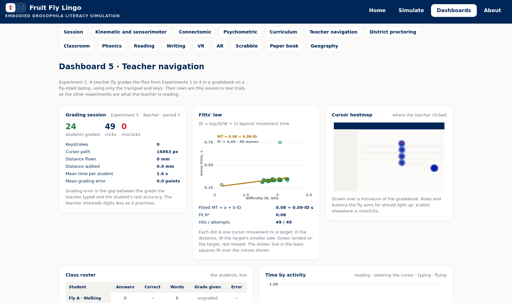
The grades are meta by design: the four student experiments produce the data the teacher reads on the laptop, and the teacher's own navigation becomes a second study, measured with the same care as the students'.
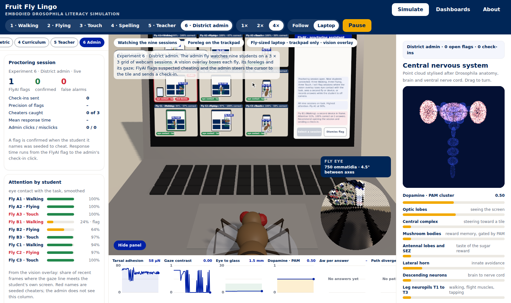
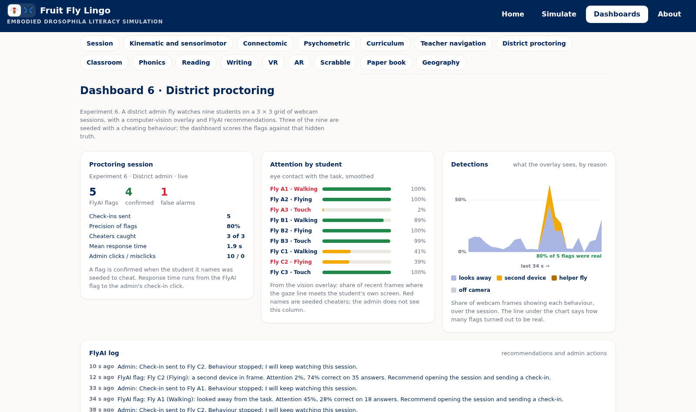
Three of the nine students are seeded each session with one behaviour: looking away from the task, a helper fly in frame, a second device, or answering while off camera. Honest students still glance away now and then, which is where false alarms come from. The admin never sees which students were seeded; the dashboard does, so the flags can be scored.
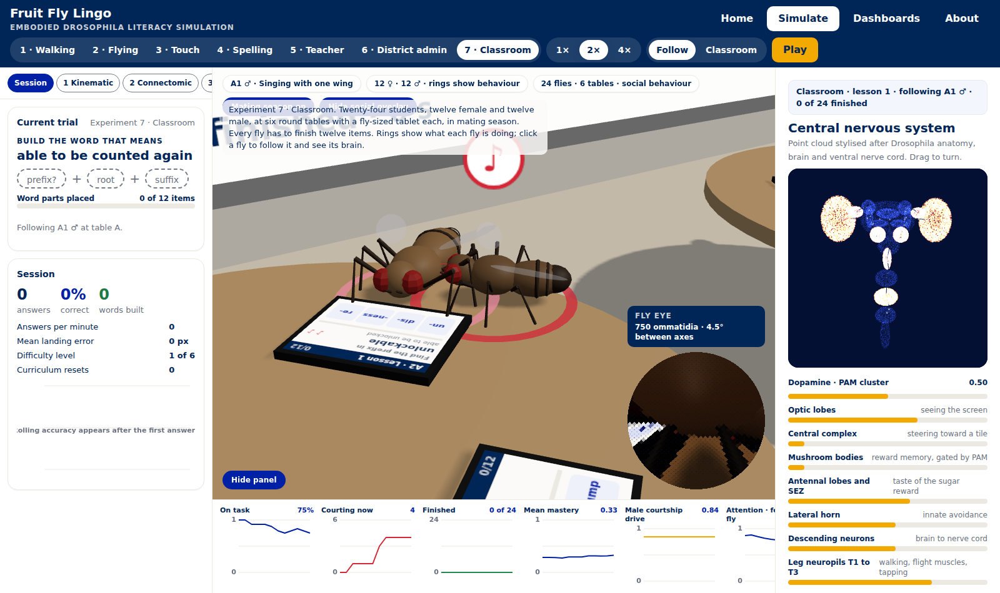
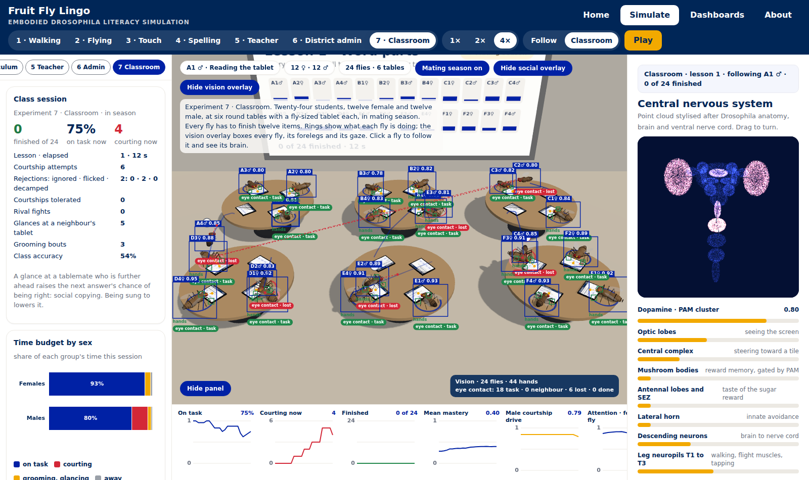
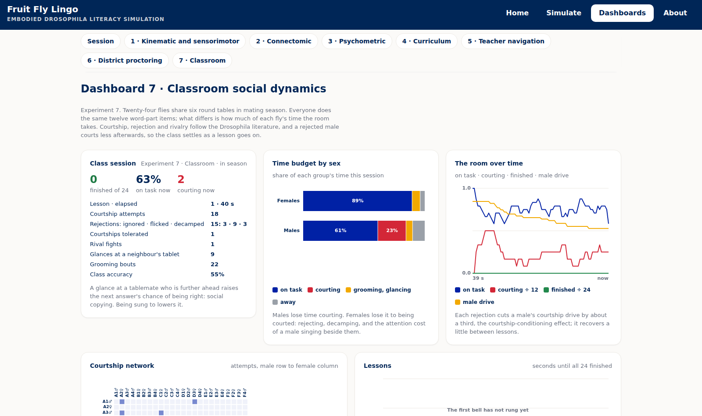
Every fly has to finish the same twelve items, and a lesson ends only when the last one does. In between, the flies behave like flies. A male may orient toward a female, follow her, tap her with a foreleg and sing by vibrating one extended wing. A busy, unreceptive female usually ignores him and keeps tapping, or flicks her wings and kicks, or decamps on a short flight. Each rejection lowers his courtship drive, the courtship-conditioning effect, so the room settles as the lesson goes on. Rival males trade wing threats and lunges, flies groom between trials, a glance at a tablemate who is further ahead makes the next answer more likely to be right, and busy tablemates keep each other on task. Turn mating season off to compare how long the class takes. With twenty-four flies there is no single fly-eye view here; instead a vision overlay, like the district admin's, boxes every fly and its forelegs, draws where it is looking with an eye-contact badge (its own tablet, a neighbour's, or lost to a suitor or rival), and traces its recent path.
The model is a caricature built on these findings, not a fit to their data.
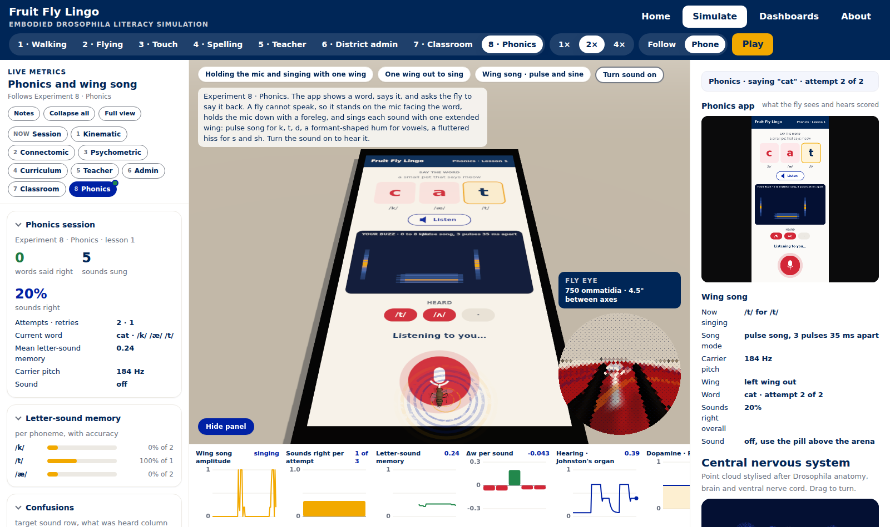
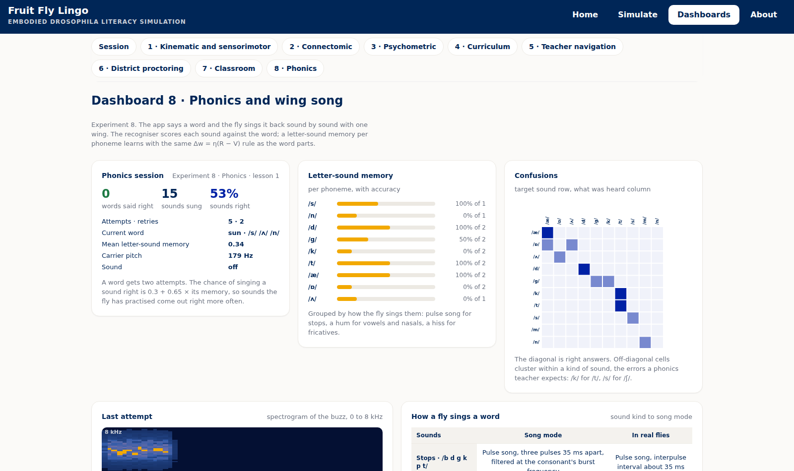
A fly has no voice, but male Drosophila do make sound: they vibrate one extended wing to sing a courtship song with two parts, a pulse song whose pulses come about 35 ms apart and a sine song that hums near 150 Hz, and they hear it with the Johnston's organ in the antennae. The phonics experiment borrows that apparatus. Stop consonants are sung as pulse song, three pulses 35 ms apart filtered at the consonant's burst frequency; vowels are a hum shaped by the vowel's first two formants; fricatives are a hiss fluttered at the wingbeat; nasals and liquids are low or gliding hums. You hear the buzz while the fly sings, and only then: a wingbeat hum near 200 Hz with the second wing slightly detuned, coloured by each sound. Each sound is right with a probability set by its letter-sound memory, and wrong ones are the confusions a phonics teacher expects, such as /t/ for /k/ or /s/ for /ʃ/.
The mapping from speech sounds to song modes is an invention of this simulation, not a claim about flies.
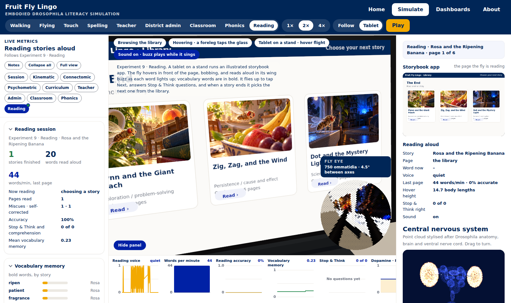
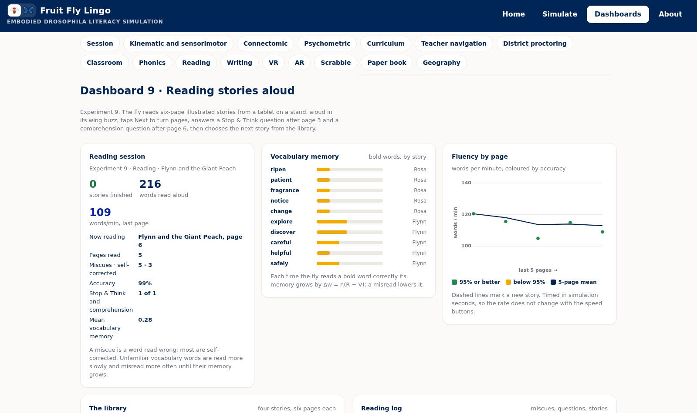
The reading app follows the pattern of illustrated readers such as LitLab: a picture and a short passage on each spread, a strip of words to know, and a comprehension check about every three pages. The four books are written for grades 3 to 5 and set in a fruit fly's world, where a peach is a mountain and a kitchen fan is a storm: Rosa and the Ripening Banana (patience and change over time), Flynn and the Giant Peach (exploration), Zig, Zag, and the Wind (cause and effect) and Dot and the Mystery Light (investigation and evidence). Every page is illustrated with an AI-generated image made from that page's prompt, with one consistent fly character; the app loads web-sized copies from docs/stories. If an image is missing, the page is painted in the browser from a scene description instead. The prompts, and how to add or replace images, are in docs/stories/prompts.md.
The fly reads word by word at about 110 words a minute, slowing on the bold vocabulary words. It flies to each word as it reads it: its position is a spring chasing a point just in front of the word, so it carries momentum from word to word, overshoots a little, hops onto each new word and swoops back at the end of a line. Each word is voiced by the same wing buzz as the phonics lesson: a hum shaped by the word's vowels, a pulse at a stop consonant, rising at a question and falling at the end of a sentence. Unfamiliar vocabulary is misread more often, and most misreadings are self-corrected. Stop & Think after page 3 and a comprehension question after page 6 are answered right with a probability that rises with the story's vocabulary memory. These books are structured like decodable readers but are not aligned to a phonics scope and sequence; mapping them to a grade 3 to 5 morphology progression is the next step.
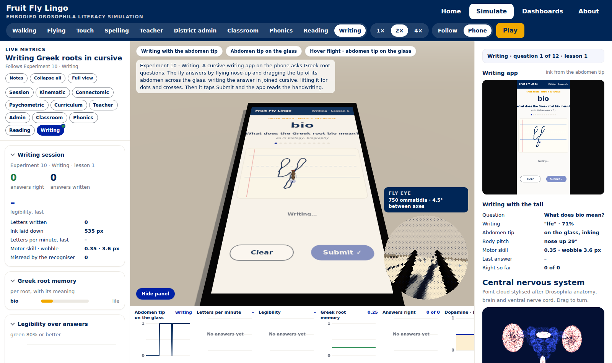
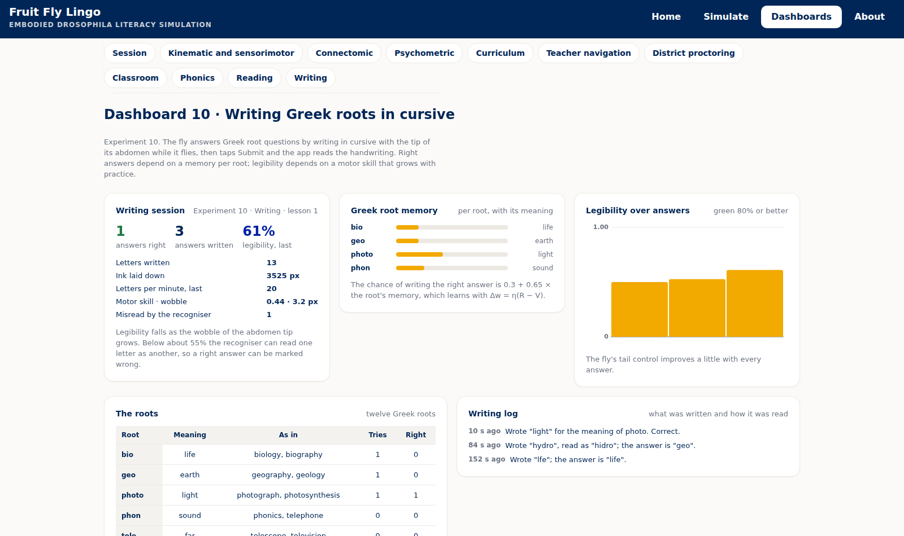
The writing app asks about twelve Greek roots, alternating between "What does the Greek root bio mean?" and "Which Greek root means light?", with example words such as biology and photograph. The fly answers in joined cursive, traced from the Hershey single-stroke script font, a public-domain set of pen-plotter letters. To write, it flies pitched about 29° nose-up so that the tip of its abdomen rests on the glass, follows each letter's stroke at about 90 pixels a second, and lifts the tip to hop to the dot of an i or the cross of a t. The abdominal ganglion lights up in the brain panel while it writes. A small wobble from hovering flight shakes the line; it shrinks as the fly's tail control improves with practice. When it taps Submit, the recogniser reads the handwriting: very shaky writing can turn one letter into another. Whether the answer itself is right depends on a memory per root, learned with the same Δw = η(R − V) rule.
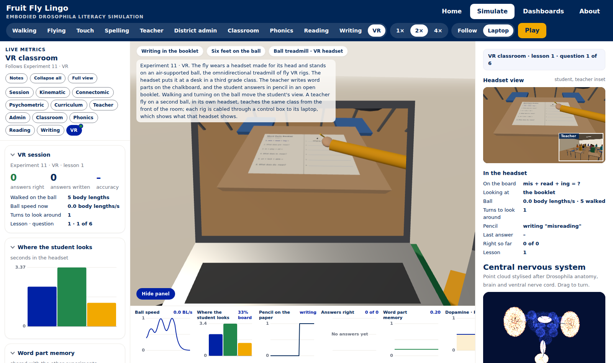
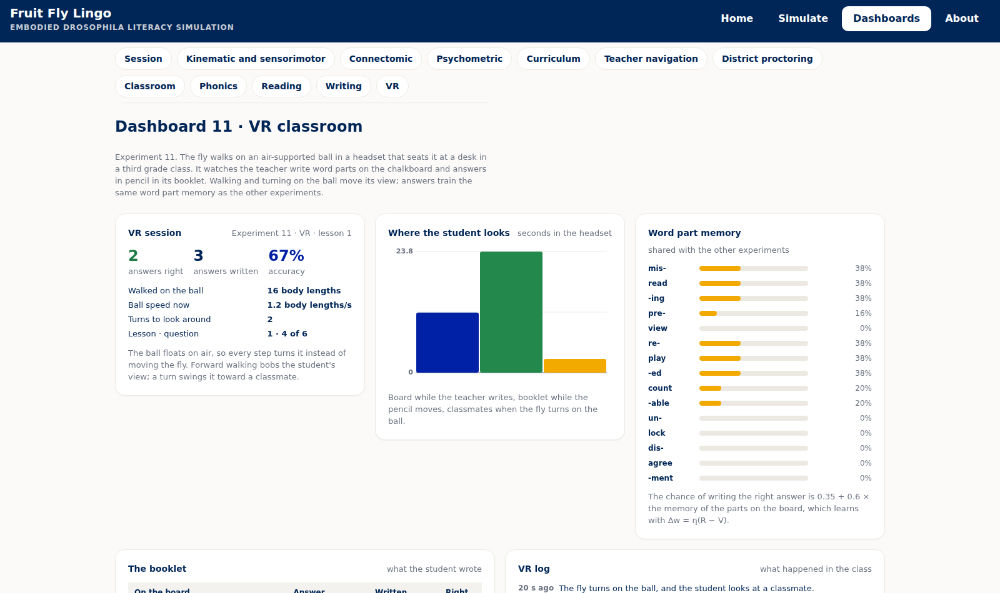
The fly stands on a ball that floats on a cushion of air, so each step turns the ball instead of carrying the fly anywhere. Its headset is a single curved visor wrapped over both compound eyes, with a glossy faceplate, a light strip, foam gasket and straps. A cable runs from the back of the strap up a tether boom and down to a control box, which is also wired to the ball's tracking and to a laptop that shows what the headset shows. A teacher fly stands on a second, identical rig, and its headset puts it at the front of the same virtual room: it steps along the chalkboard as it writes, with its right foreleg tracing the chalk, then turns to look across the desks. Its laptop shows the class from the teacher's eyes. The student's headset seats it at a desk in a third grade class: sixteen desks, classmates who fidget, windows, and a teacher at a chalkboard. The teacher chalks one item at a time, either a word to build from its parts (re + count + able = ?) or a prefix to define (pre- means ?). The student looks down at its open booklet and writes the answer in cursive pencil, and the fly's right foreleg traces the same strokes in small. The teacher marks it with a tick or a cross, and after six items the board is erased for a new page. Walking bobs the view; now and then the fly turns on the ball and the student glances at a classmate. Answers train the same word part memory as the other experiments.
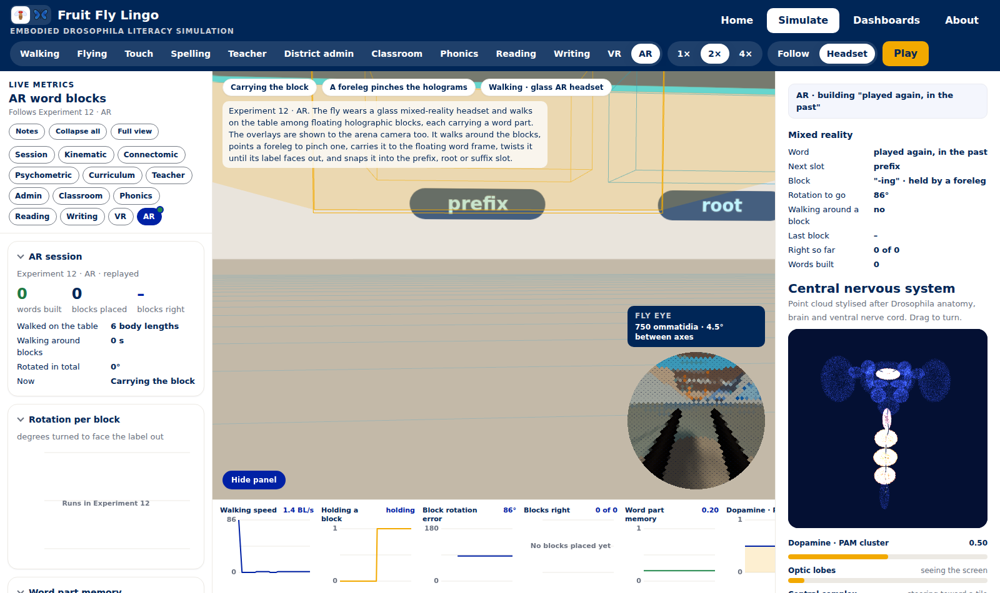
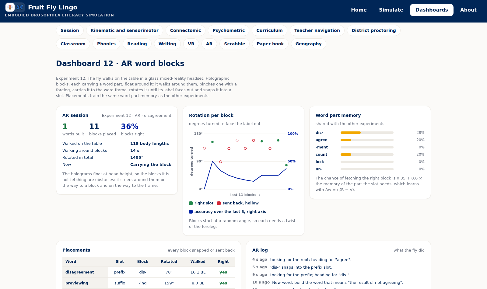
No treadmill here: the fly really walks, on the table, in a glass headset with a clear visor under a slim frame. The headset overlays a spatial grid on the table, a floating word frame with prefix, root and suffix slots, and six holographic blocks at head height, three carrying the word's parts and three carrying parts of other words. The blocks it is not fetching are obstacles, so it steers around them. It points its right foreleg at a block to pinch it (the headset draws the ray), carries it to the frame, and twists it with a circling foreleg until the label faces out. A right block snaps in green; a wrong one flashes red and drifts back to where it was. The chance of fetching the right block rises with the memory of that part, which learns with every placement.
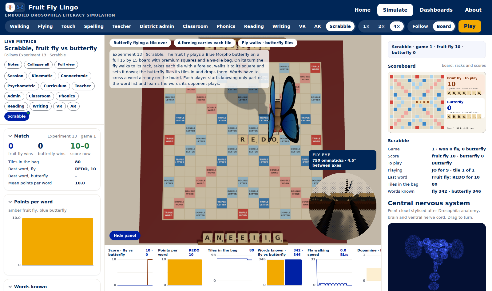
The fruit fly plays a Blue Morpho on a full 15 by 15 board with the standard premium squares, letter values and a 98-tile bag. The first word goes through the centre star, and every later word must cross one on the board without touching any other; seven tiles in one turn score 50 more. On its turn the fly walks to its rack, takes a tile with a foreleg, walks it to its square and sets it down, one tile at a time; the butterfly flies to its rack, picks a tile up, flies it over and drops it. Each player starts knowing the two- and three-letter words and about half of the rest of the word list, plays its best-scoring word most of the time, and learns seven in ten of the words its opponent plays. Games run until the bag and a rack are empty, and the side panel keeps the score, the racks and the wins. In this experiment the student is always the fruit fly.
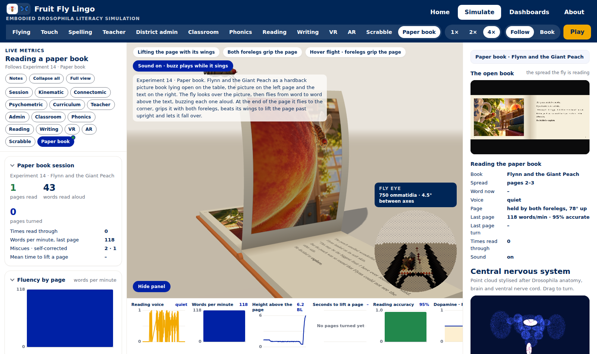
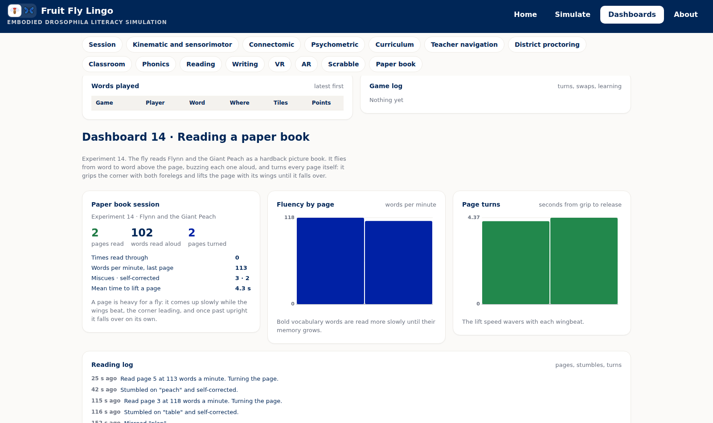
The same story as in Reading, Flynn and the Giant Peach, with the same pictures, printed as a hardback picture book lying open on the table. The fly looks over the picture on the left page, then flies from word to word above the text on the right, buzzing each word aloud in the same wing voice; the story's vocabulary is printed in bold and read more slowly until it is learned. At the foot of the page it flies to the outer corner, grips it with both forelegs and beats its wings to lift the page, which comes up slowly and curls from the spine with the corner leading. Past upright it lets go, and the page falls over onto the left. After the last page and The End the pages flip back and it reads the book again.
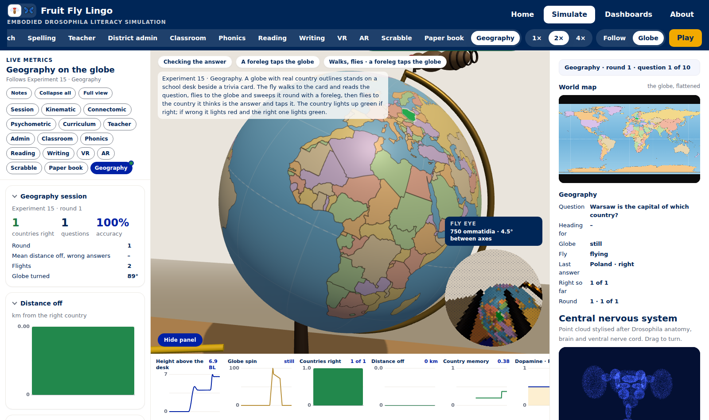
A globe stands on a school desk, drawn with real country outlines from Natural Earth and tilted on its axis in a brass meridian ring. A trivia card on the desk asks a question, such as which country is home to Machu Picchu or which city is the capital of Poland. The fly walks to the card and reads it, flies to the globe and sweeps it round with a foreleg, then flies to the country it has chosen and taps it. The country lights green if it is right; if it is wrong it lights red and the right country lights green, and the distance between them is measured along the Earth's surface. A memory per country decides how often it is right, and a wrong choice is usually one of the right country's neighbours. Questions come in rounds of ten.
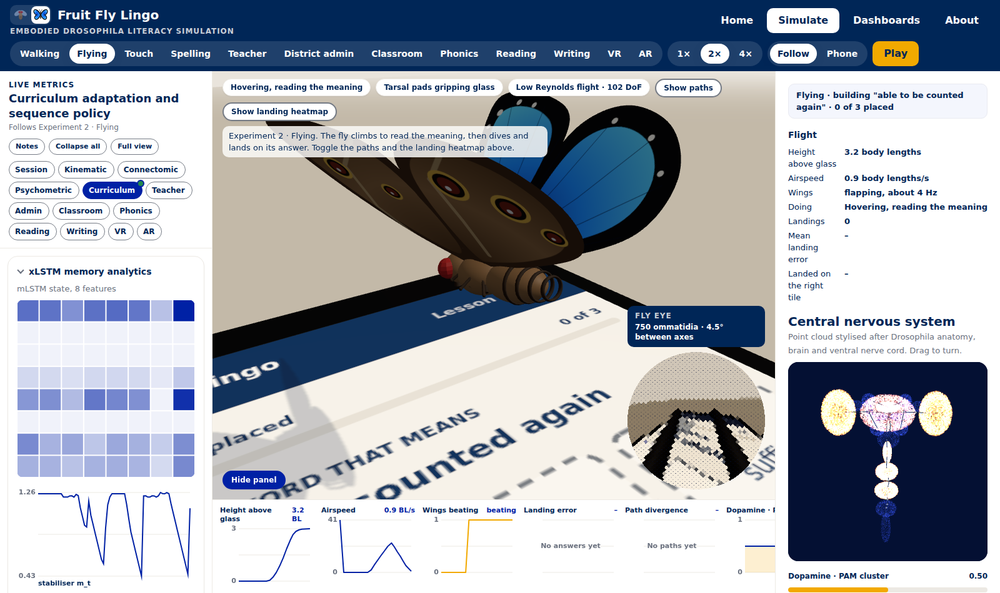
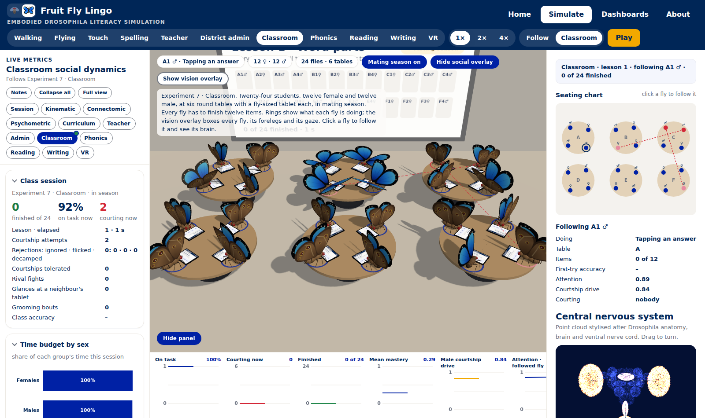
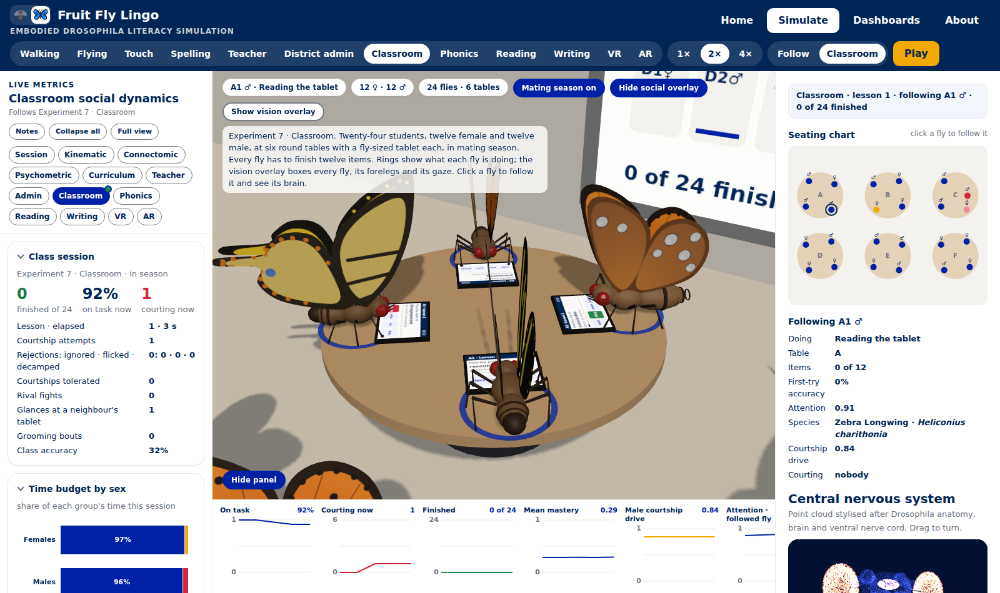
The two logos at the left of the header switch the insect. In butterfly mode the fly becomes a Blue Morpho, 1.8 times the fly's size, with iridescent blue wings with a black margin and white spots, brown with eyespots underneath. The classroom becomes six species common around Gainesville, Florida: Zebra Longwing, Gulf Fritillary, Monarch, Eastern Tiger Swallowtail, Cloudless Sulphur and Common Buckeye, four of each, mixed across the tables. The brain and behaviour are unchanged, but the big wings change the movement. At rest they are held closed over the back and opened now and then to bask; in flight they beat about four times a second instead of two hundred, and each downstroke lifts the body so the flight bobs and weaves.
Procedural body and behaviour, a memory-weighted policy, a stylised brain, the fly-eye mosaic, the curriculum, and the four dashboards running on live telemetry from the scene.
The MuJoCo flybody model compiled to WebAssembly at 800 Hz with 102 degrees of freedom and adhesion actuators; the Fly-connectomic Graph Model on the MaleCNS v1.0 connectome (166,691 neurons, more than 125 million synapses) as the controller; xLSTM with Tiled Flash Linear Attention on WebGPU; xAPI telemetry through a Science DMZ into a Learning Record Store.
The five reports behind the design, with page images from each. Every source they cite is listed below.
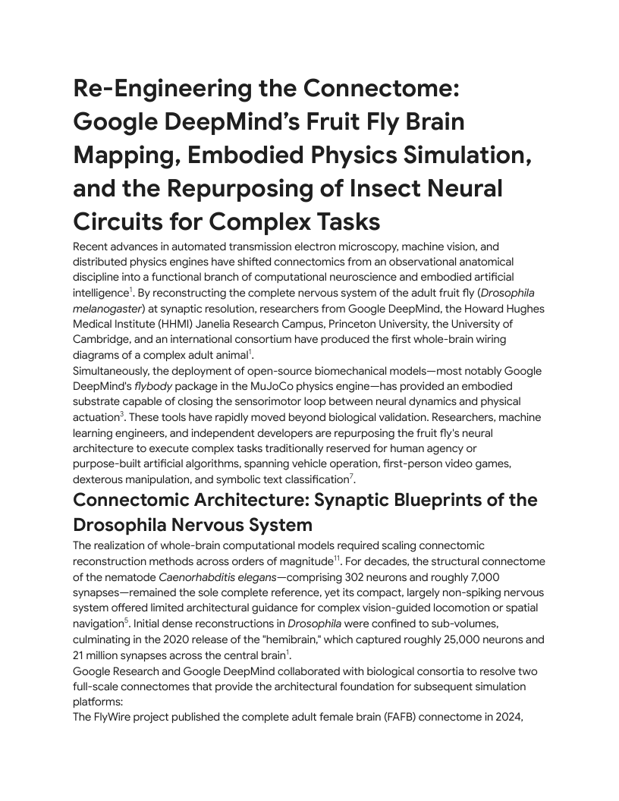
Google DeepMind’s fruit fly brain mapping, embodied physics simulation, and the repurposing of insect neural circuits for complex tasks. 14 pages.
Figures: the connectome-to-controller pipeline and the repurposed-circuit task table.
High-fidelity simulation, embodied control, and whole-brain modelling of Drosophila melanogaster. 15 pages.
Figures: neurotransmitter inference and the signed adjacency formulation; leaky integrate-and-fire dynamics.
Evaluating a simulated Drosophila connectome in a web-based language acquisition environment. 17 pages. The source of the Q-matrix, G-DINA, Half-Life Regression, Rasch and Decision Transformer methods used in the dashboards.
Figures: the Q-matrix and the DINA and G-DINA item response functions; the Half-Life Regression and Rasch specifications.
Duolingo-style frameworks, morphological engines and pedagogical corpora: LibreLingo, Word Root Workshop, LEAF, MorphoLex. 12 pages.
Figure: platform comparison table.
The requirement document this app implements the interaction layer of: body, connectome controller, interface optics, evaluation, telemetry. 4 pages.
Titles and links as they appear in each report's works-cited list, 187 in all. Links open in a new tab.
Styling uses a University of Florida palette: core blue for actions, dark blue for chrome and text, alachua for work in flight, gator green for mastery, and bottlebrush red only for errors. Headings and controls are set in Neulis Sans and running text in Liebling, both with system fallbacks. The simulation is a single HTML file on three.js. Source on GitHub.